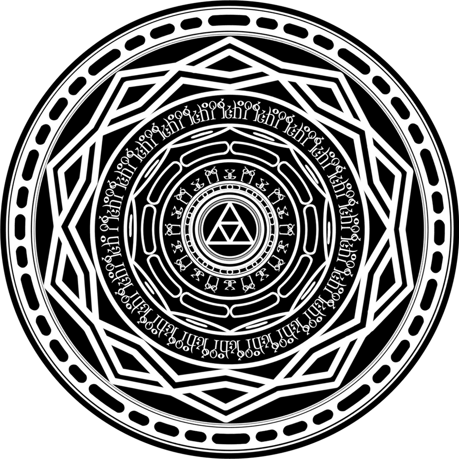
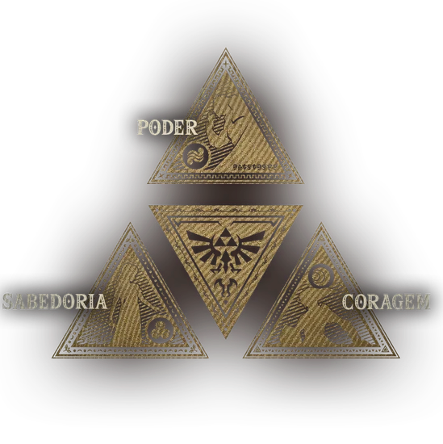
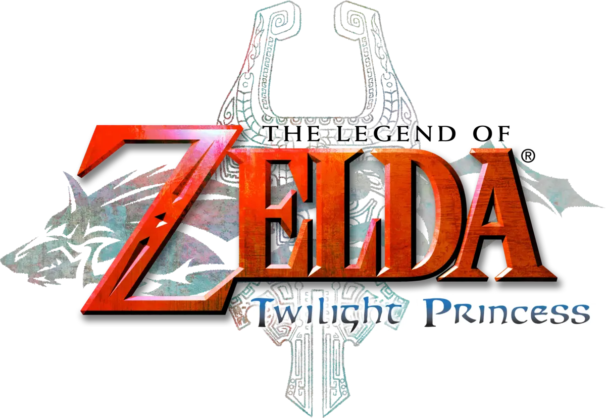
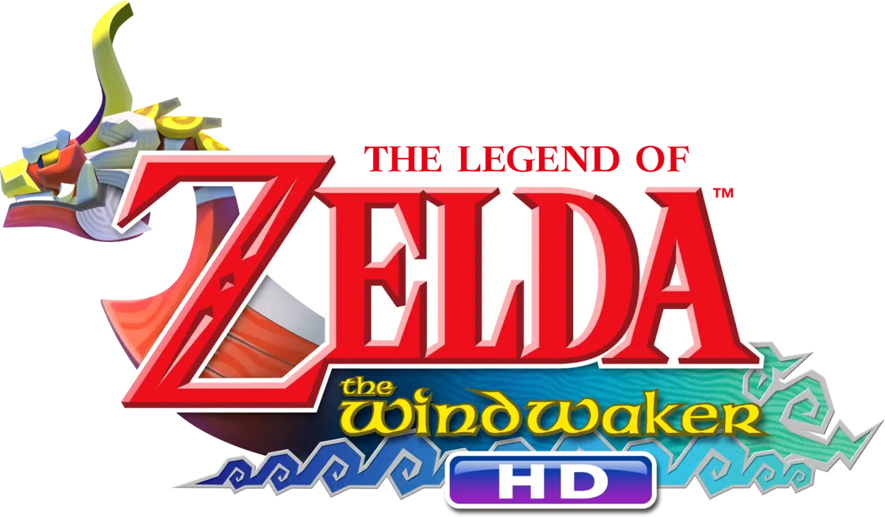
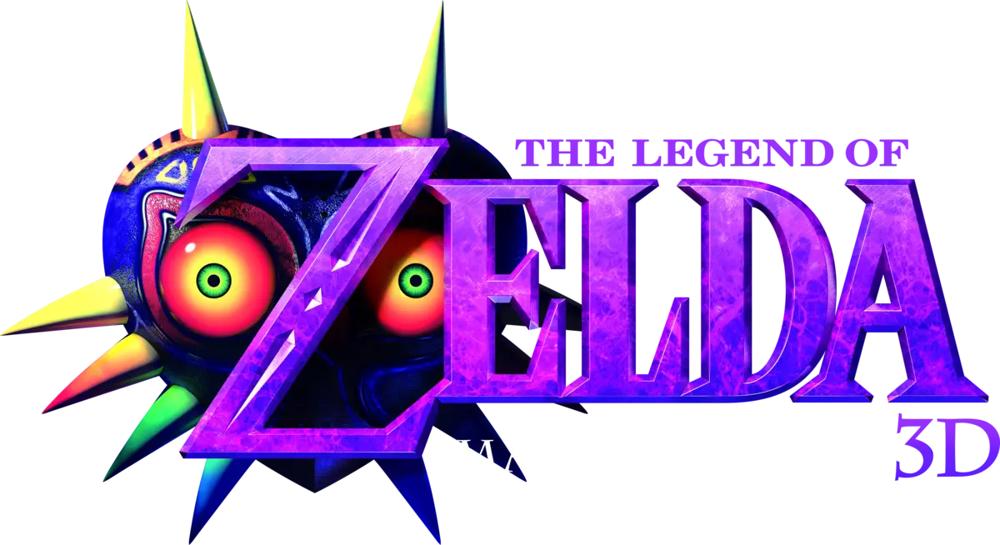
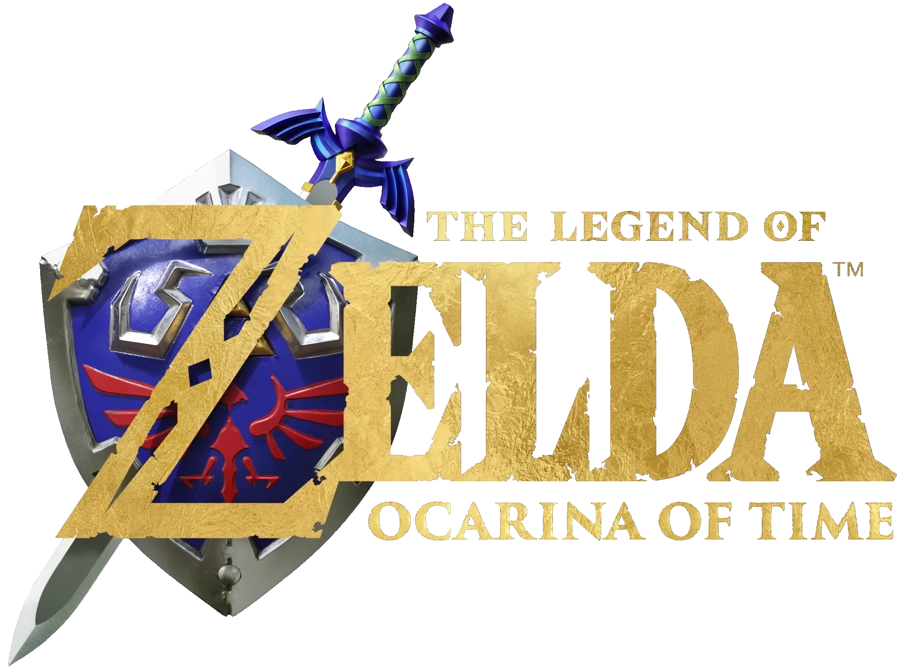

Hyrule Memorium
Adentre neste santuário de memórias tão ricas dos nossos grandes herois de Hyrule...






Nossa história começa em Ordon, onde Link cuida das cabras com sua égua Epona. Quando monstros levam Ilia e as crianças da vila, ele parte atrás delas. Ao atravessar a barreira de sombras que cobre Hyrule, Link se transforma em lobo.
Na prisão do castelo, Link conhece Midna. Juntos, eles devolvem a luz às províncias e atravessam o espelho para enfrentar Zant, o usurpador. Depois da batalha contra Ganondorf, Midna volta ao seu reino e parte o espelho que ligava os dois mundos.

No dia do seu aniversário, Link ganha da irmã Aryll uma luneta. É por ela que avista um pássaro gigante carregando a pirata Tetra. Quando a ave volta e leva Aryll por engano, Link deixa a ilha da avó e embarca com os piratas para buscar a irmã.
Guiado por um barco falante, Link descobre que a antiga Hyrule repousa no fundo do mar. Ele reúne os fragmentos da Triforce da Coragem e enfrenta Ganondorf ao lado de Tetra. O velho reino fica sob as ondas, e os dois voltam a navegar em busca de uma nova terra.

Em busca de uma velha amiga, Link encontra Skull Kid, que rouba sua ocarina e o transforma em um pequeno Deku. A perseguição termina na Cidade do Relógio. Os moradores preparam o carnaval, mas, acima da torre, a lua desce um pouco mais a cada hora...
Com a ocarina de volta, Link toca a Canção do Tempo e retorna à primeira manhã. A cada ciclo, ele conhece melhor os moradores e se aproxima dos quatro gigantes. Na última noite, eles seguram a lua enquanto Link enfrenta o poder que controlava Skull Kid: a Máscara de Majora.

Na Floresta Kokiri, Link é o único menino sem uma fada. Uma manhã, Navi vem buscá-lo a pedido da Grande Árvore Deku. Antes de morrer, a árvore entrega a Link uma esmeralda e pede que procure a princesa de Hyrule. Pela primeira vez, ele deixa a floresta onde cresceu.
Ao retirar a Espada Mestra do pedestal, Link adormece por sete anos. Quando desperta, Ganondorf tomou o castelo e o mercado de Hyrule está em ruínas. Link viaja entre a infância e a vida adulta para despertar os sábios. Com a ajuda de Zelda, eles selam Ganondorf, e o herói pode voltar a ser criança.